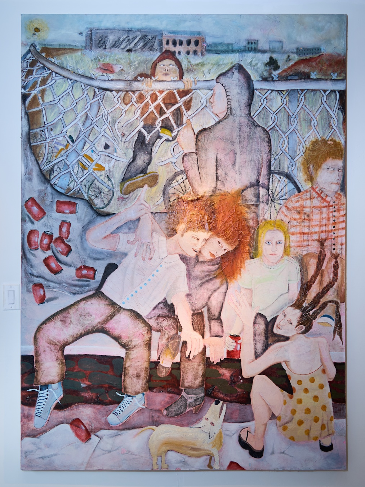
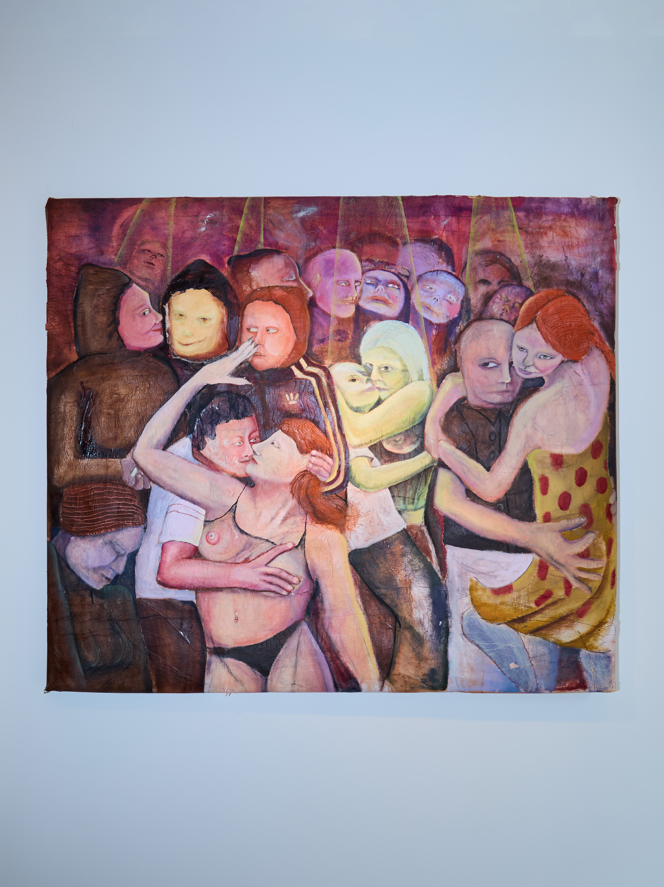
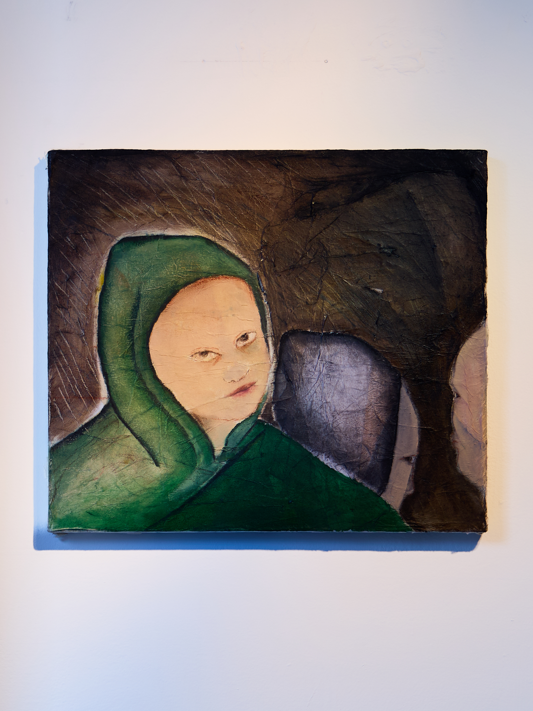

A Cracked Radiant Web
Review of Stephanie Hayden "BIKE TIME"
Lushly affectionate, Stephanie Hayden pastes the evolving skin of street walls—wheat paste mixed with tissue paper—onto the canvas, layer upon layer upon layer, forming a tangled, cracked, cool-toned urban mat. Wrinkles are the medals of ephemeral street art, and also a stone soup hand-cooked by city kids, pecking through the surface of the paper in the repeated acts of adhesion and peeling. The hazy sky presses low; stone-like gazes turn slowly within it; eyelids slightly crease, becoming a surface that cannot be smoothed. They stretch their necks forward, riding toward the clamor, toward dusk, toward that always-elevated terrain. The ground rolls—a skin not yet fixed. The formation and the crowd, in an abnormally purple dream, head toward a trending new-world base, stubbornly attaching themselves to the shifting ground.

Penetrating the back of the paper, her paintings—thick in texture—give birth to waxy gazes, pale, steep, imminent. "About a dream of girlhood salvation," Hayden says. And so the riding does not head toward a destination: toward depth, toward valleys, toward the shoving laughter of boys, toward brightening light, toward darkening skies. girlhood's holy bike trip, as a latecomer to the street, seems to carry only a sweet-toned endurance in its forward motion. From all directions, they suspend in the watery center of the canvas, with fully sly glances and fully unruly postures, responding to the modern, universal, cement-toned waxy yellow of the world. The figures, following the choreographic intuition brought by Hayden's dance background, lightly shuttle, measure, and traverse—upright, grounded, and expansive. She choreographs posture, choreographs spatial perspective, choreographs lighting, choreographs hair, choreographs clothing, choreographs facial expression—choreographs one damn big television. The piercing unease between the street and non-male roles, along with a tamed yet alien sky-tone, thus grows along Hayden's park rehearsals from broken wire fences into tender emotional callus. With the grooves of wheat paste and paper pulp slowing things down, perhaps some calluses are gently rubbed into being.

As if hanging in the wind—Hayden lets the temporality of the image and its cinematic theatricality scrape against each other in opposing directions. Borrowing force from both ends, the image lifts cleanly off the ground, kissing a centrifugal will, repeatedly reenacting suspended swaying and agitation—intimate, forceful, sweat-damp. This peculiar durability extends an excess of drift toward you—rolling, almost, from the edge of a twin-size bed, startling the cat. Everything resembles the rebound of a bow pressed to its lowest point and then lifted in time; the viewer is halted on the way to that theater of the image and placed in a random midpoint—the bow pressed again and held there. The echo of wind still sticks behind the ear; we can only, with effort, walk back together. Within this interrupted and delayed rushing, Hayden's painting simmers a slowed capture and a nimble loosening, leisurely climbing back into the wind; even if it slips off beat, it merely closes its eyes again and returns to the dream to climb once more. Hayden's enduring dream thus calls in the unguarded viewer to enlist, while continuing to gather a tender chivalry that accumulates a vivid will to escape.

The cracked eyes, with a slightly transgressive pallor, render viewing itself uneasy, even drawing one into a certain suspicion within the image. Whether wide open or half-closed, the eyeballs always carry a nearly hostile suspicion, looking toward a direction that leaves one at a loss. This abrupt expression, exposed or sharply confused, continuously estranges me—wrinkles, dreams, inertia, experience, and direction entering into a small scuffle of novelty. The small scuffle benefits the health of relations, benefits the strength of a cat's cradle; relations do not settle, but remain in a light tension through repeated pulling and loosening.